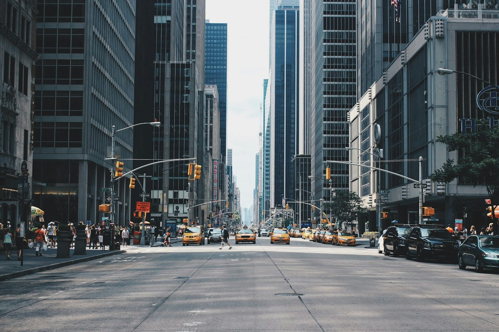

10.26周日
周末走走：校园光影外拍
示例活动
示例图片 · 待替换为协会成员作品
Contact sheet / 本期印样

红圈是这一期选中的一张。第 07 格，留给下一次外拍。
Upcoming / 近期
示例活动不开放真实报名。正式活动发布后会显示名额与截止时间。
摄影组 · 2026 级 · 加入于 2026.09
“一句话自我介绍由成员本人填写，不超过 24 字。写你真正在拍的东西。”
Archive / 档案
这一年的文件还没有人整理。换届交接时，请把策划、名单、成片放进来。
空着也没关系。档案允许缺页，但不应该假装完整。